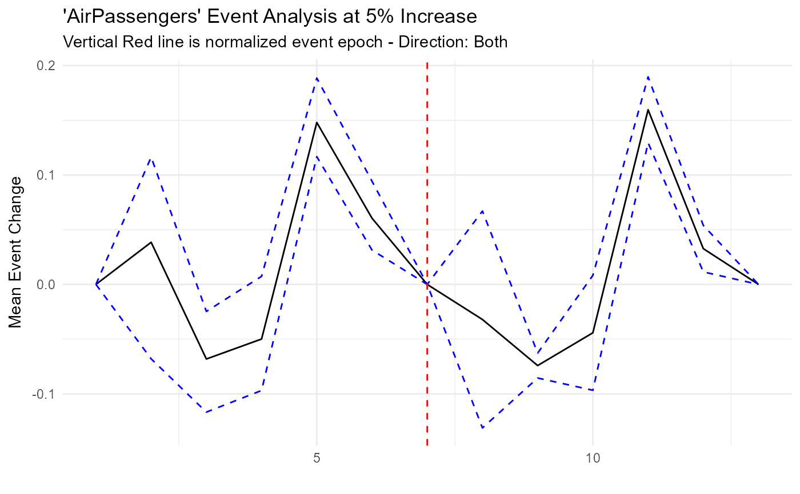

Given a tibble/data.frame, you can get information on what happens before, after,
or in both directions of some given event, where the event is defined by some
percentage increase/decrease in values from time t to t+1
Usage
ts_time_event_analysis_tbl(
.data,
.date_col,
.value_col,
.percent_change = 0.05,
.horizon = 12,
.precision = 2,
.direction = "forward",
.filter_non_event_groups = TRUE
)Arguments
- .data
The date.frame/tibble that holds the data.
- .date_col
The column with the date value.
- .value_col
The column with the value you are measuring.
- .percent_change
This defaults to 0.05 which is a 5% increase in the
.value_col.- .horizon
How far do you want to look back or ahead.
- .precision
The default is 2 which means it rounds the lagged 1 value percent change to 2 decimal points. You may want more for more finely tuned results, this will result in fewer groupings.
- .direction
The default is
forward. You can supply eitherforward,backwardsorboth.- .filter_non_event_groups
The default is TRUE, this drops groupings with no events on the rare occasion it does occur.
Details
This takes in a data.frame/tibble of a time series. It requires a date column,
and a value column. You can convert a ts/xts/zoo/mts object into a tibble by
using the ts_to_tbl() function.
You will provide the function with a percentage change in the form of -1 to 1
inclusive. You then provide a time horizon in which you want to see. For example
you may want to see what happens to AirPassengers after a 0.1 percent increase
in volume.
The next most important thing to supply is the direction. Do you want to see what typically happens after such an event, what leads up to such an event, or both.
See also
Other Time_Filtering:
ts_compare_data()
Examples
suppressPackageStartupMessages(library(dplyr))
suppressPackageStartupMessages(library(ggplot2))
df_tbl <- ts_to_tbl(AirPassengers) %>% select(-index)
tst <- ts_time_event_analysis_tbl(df_tbl, date_col, value, .direction = "both",
.horizon = 6)
glimpse(tst)
#> Rows: 33
#> Columns: 18
#> $ rowid <int> 1, 2, 3, 4, 5, 6, 7, 8, 9, 10, 11, 12, 13, 14, 15…
#> $ date_col <date> 1949-02-01, 1949-03-01, 1949-04-01, 1949-05-01, …
#> $ value <dbl> 118, 132, 129, 121, 135, 148, 148, 199, 184, 162,…
#> $ lag_val <dbl> 112, 118, 132, 129, 121, 135, 148, 199, 199, 184,…
#> $ adj_diff <dbl> 6, 14, -3, -8, 14, 13, 0, 0, -15, -22, -16, 20, 5…
#> $ relative_change_raw <dbl> 0.05357143, 0.11864407, -0.02272727, -0.06201550,…
#> $ relative_change <dbl> 0.05, 0.12, -0.02, -0.06, 0.12, 0.10, 0.00, 0.00,…
#> $ pct_chg_mark <lgl> TRUE, FALSE, FALSE, FALSE, FALSE, FALSE, FALSE, F…
#> $ event_base_change <dbl> 0.00000000, 0.11864407, -0.02272727, -0.06201550,…
#> $ group_number <fct> 1, 1, 1, 1, 1, 1, 1, 1, 1, 1, 1, 1, 1, 2, 2, 2, 2…
#> $ numeric_group_number <int> 1, 1, 1, 1, 1, 1, 1, 1, 1, 1, 1, 1, 1, 2, 2, 2, 2…
#> $ group_event_number <int> 1, 1, 1, 1, 1, 1, 1, 2, 2, 2, 2, 2, 2, 2, 2, 2, 2…
#> $ x <int> 1, 2, 3, 4, 5, 6, 7, 1, 2, 3, 4, 5, 6, 7, 8, 9, 1…
#> $ mean_event_change <dbl> 0.00000000, 0.03849647, -0.06815622, -0.04991040,…
#> $ median_event_change <dbl> 0.00000000, 0.07222222, -0.06217617, -0.06201550,…
#> $ event_change_ci_low <dbl> 0.00000000, -0.06799693, -0.11669576, -0.09692794…
#> $ event_change_ci_high <dbl> 0.000000000, 0.116322976, -0.024699717, 0.0073964…
#> $ event_type <fct> Before, Before, Before, Before, Before, Before, A…
tst %>%
ggplot(aes(x = x, y = mean_event_change)) +
geom_line() +
geom_line(aes(y = event_change_ci_high), color = "blue", linetype = "dashed") +
geom_line(aes(y = event_change_ci_low), color = "blue", linetype = "dashed") +
geom_vline(xintercept = 7, color = "red", linetype = "dashed") +
theme_minimal() +
labs(
title = "'AirPassengers' Event Analysis at 5% Increase",
subtitle = "Vertical Red line is normalized event epoch - Direction: Both",
x = "",
y = "Mean Event Change"
)
